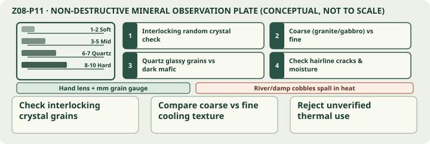

Z08-P11 · Rocks, minerals and materials · New manuscript
Igneous Rock Class Screening: Granite, Basalt and Gabbro
Differentiate coarse- and fine-grained igneous rocks by interlocking crystal texture without implying structural or thermal ratings.
When it applies · Outcrops, cobble bars, and glacial erratic screening.
Equipment · 10x hand lens, metric ruler, notebook.

Actions
- Identify igneous candidates by randomly oriented interlocking crystals lacking sedimentary bedding planes or parallel metamorphic banding.[R03]
- Separate light-colored quartz-feldspar granite from dark iron-magnesium gabbro and fine-grained basalt using crystal size and quartz visibility.[R03, R04]
- Avoid assuming dense igneous cobbles are safe for fire rings or heated boiling stones because hairline fractures trap internal moisture.[R13]
Failure recognition · Confusing dense dark basalt with chert or heating river-soaked granite cobbles risks violent thermal spalling and eye injuries.[R05, R13]
Verify · Crystal interlocking, grain-size bracket, and moisture-spalling cautions are logged without certifying structural or fire safety.[R03, R13]
Stop or change course · Stop heating or striking unidentified igneous cobbles, especially any stone gathered near lakes, rivers, or damp soil.[R06, R13]
Evidence and editorial notes
- R03 · USGS · Collecting Rocks: Rock Classes and Mineral Property Basics (USGS GIP)
- Section: Igneous, sedimentary, and metamorphic rock classes · Conditions: Field rock class screening without laboratory petrography
Support: Observable grain interlocking, layering, bedding, or foliation helps separate broad rock classes.
Limitations: Weathered rinds and fine-grained dark rocks frequently mimic other classes visually; hand-lens inspection is preliminary only. · Conflicting evidence: None noted.
Editorial note: Establishes non-destructive classification limits. · Specialist reviewer: Field geologist
Primary source · checked 2026-11-25 - R04 · USGS · Collecting Rocks: Rock Classes and Mineral Property Basics (USGS GIP)
- Section: Hardness, luster, streak, and fracture vs cleavage · Conditions: Non-destructive mineral observation with simple field cues
Support: Scratch hardness, unglazed streak, luster, and fracture-versus-cleavage patterns narrow candidate mineral groups.
Limitations: Field scratch checks cannot establish chemical purity, trace heavy metals, or absence of hazardous fibers. · Conflicting evidence: Color alone is unreliable across quartz, calcite, and feldspar varieties.
Editorial note: Core Z08 mineral screening basis. · Specialist reviewer: Mineralogist
Primary source · checked 2026-11-25 - R05 · Minnesota DNR · Rocks and Minerals of Minnesota Educational Guide (Current web edition)
- Section: Chert, jasper, agate, and quartz occurrences · Conditions: Upper Midwest siliceous cobbles and sedimentary nodules
Support: Cryptocrystalline quartz varieties (chert, flint, jasper, agate) are hard silica rocks showing conchoidal fracture rather than planar cleavage.
Limitations: Visual similarity to fine-grained quartzite, basalt, or glass does not confirm thermal stability or structural suitability. · Conflicting evidence: None noted.
Editorial note: Anchors Z08 siliceous stone identification. · Specialist reviewer: Geologist and materials specialist
Primary source · checked 2026-11-25 - R06 · NIOSH / CDC · Crystalline Silica Respiratory Dust Hazards (2024)
- Section: Overview; Exposure · Conditions: Silica-bearing material disturbed by cutting, grinding, or similar dust-producing work
Support: Respirable crystalline silica exposure can cause silicosis and other disease. Avoid creating dust during field recognition.
Limitations: Hazardous particles may be invisible. Wind, casual wetting and a mask alone do not establish exposure control. · Conflicting evidence: Conditions are recorded in the A03 audit.
Editorial note: Mandatory Z08 silica/eye safety gate. · Specialist reviewer: Industrial hygienist and geologist
Primary source · checked 2026-11-25 - R13 · National Park Service · Rocks and Minerals Geological Overview (Current web edition)
- Section: Rocks and Minerals overview · Conditions: Unrated stones near a fire or during thermal cycling
Support: Use agency-approved fire facilities and keep people away from cracking or shifting material.
Limitations: Editorial avoidance. The cited geology overview does not establish a safe rock type, moisture test or heating threshold. · Conflicting evidence: Conditions are recorded in the A03 audit.
Editorial note: Reinforces Z03/Z08 wet-rock spalling stop. · Specialist reviewer: Geologist and fire safety reviewer
Primary source · checked 2026-11-25
Source lineage · New manuscript (Z08 P16 rock classes) · Classification · New manuscript.